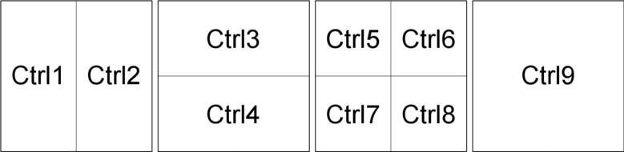
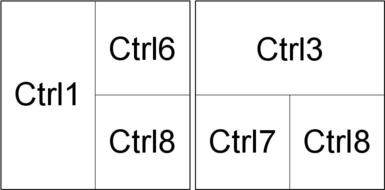
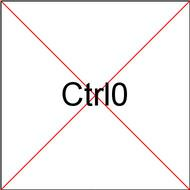

Conventions
What is Wingrid?
It is a convenient and speedy way to place the active window into a predetermined position and size on screen.
When working with multiple open windows, you often need to drag them around the desktop to put them into optimal locations. Wingrid can help by automating the relocation.
The screen is notionally divided into 4 equally sized invisible rectangles in a 2x2 grid. Via a key press, the active window is moved within the grid. Each window may occupy any 1, any 2 adjacent, or all 4 rectangles. You can choose whether the window is to be at the top, bottom, left, or right of the screen, or maximized. You can also change the position and size of any window at any time.
This flexibility enables you to put multiple windows into a layout that suits your way of working. It is easy to have one layout for your current task and a different one when you switch to your next task.
Placing a Window into the Grid
The window to be acted upon is always the active window. It is sometimes known as the window that has the focus.
Placing the window into the grid is done by a combined key press, i.e. the control key (Ctrl) and a number key (1-9).
Each number key represents a different placement within the grid as shown in the following diagram.

Various permutations can be created to suit your preferred layout, for example

|
|
If your vertically stacked windows overlap, refer to the section named Fine Tuning |
You may also gracefully close a window

Fine Tuning
You can control Wingrid by changing its settings.
|
|
Settings are held in a single hidden file in your home folder .config/wingrid/wingrid.conf |
In any layout in which windows are stacked vertically, they might be slightly misaligned and produce overlap. This can be corrected by increasing/reducing the height of the windows in wingrid.conf. Adjustments are usually set-and-forget. Once they have been done to your satisfaction, they will work for all window layouts that Wingrid stacks vertically.
|
|
A simple way to open wingrid.conf for editing is 1. Switch your file manager to show hidden files 2. Browse to .config/wingrid/wingrid.conf 3. Select the file and open it in your text editor |
Correcting Overlapping Windows
The method uses two windows stacked vertically via Ctrl3 and Ctrl4 respectively.
In wingrid.conf
-
Change WINHEIGHT_LESS from zero to a value of your choice
-
Save the change
-
Click on the top window in the stack to make it active
-
Press Ctrl3 to refresh the window
The bottom edge of the top window has moved up the screen -
Change WINHEIGHT_MORE from zero to a value of your choice
-
Save the change
-
Click on the bottom window in the stack to make it active
-
Press Ctrl4 to refresh the window
The top edge of the bottom window has moved up the screen
Repeat the adjustment process using refined values if neccessary until the windows abut correctly.
Example Adjustment of Window Heights
On the author’s system the following creates top and bottom windows of equal height
|
|
wingrid.conf |
Changing the Key Combinations
The assignment of a combined keypress is handled by the window manager. In your antiX system this will often be one of the following Fluxbox, IceWM, or JWM.
|
|
Key assignments are held in a hidden file in your home folder .fluxbox/keys .icewm/keys .jwm/keys |
Each of them assigns combined keystrokes in its own way. Changing assignments is best done after referring to the user manual of the your chosen window manager.
Summary of Files
Configuration file is located in /home/USERNAME/.config/wingrid/
-
wingrid.conf is the default configuration file
Executable files are located in /usr/local/bin/
-
wingrid-left.sh
-
wingrid-right.sh
-
wingrid-top.sh
-
wingrid-bottom.sh
-
wingrid-topleft.sh
-
wingrid-topright.sh
-
wingrid-bottomleft.sh
-
wingrid-bottomright.sh
-
wingrid-maximize.sh
-
wingrid-close.sh